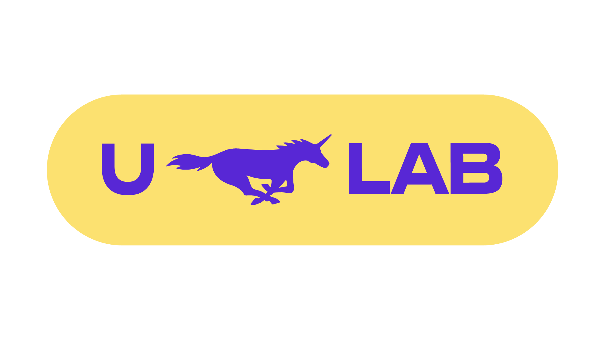
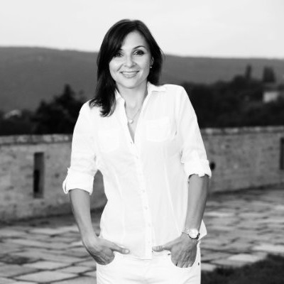

Unicorns Lab s.r.o. | od roku 2020

Performance & Reporting specialist
Kromě správy reklam se od září věnuji automatizací dat z PPC, GA4 a CRM. V Sheets tvořím výpočetní modely a v Looker Studiu vizualizuji výkonnost. Jde o takové budování „jednoho zdroje pravdy”. Analýzou trendů generuji strategické insighty pro rozvoj klientských projektů.
- Vedení klíčových projektů od zadání po spuštění.
- Optimalizace procesu komunikace s klienty.
- Zvýšení spokojenosti zákazníků o 15 %.
Head of PPC team
Zde jsem sbíral první zkušenosti s oborem. Skvělá škola, která mi dala pevné základy.
- Vedení 3 PPC specialistů a koordinace marketingových aktivit pro 9 firem ve 30 zemích světa.
- V sezóně jsem spravoval rozpočty ve výši až 1,25 milionu denně. Nejde tedy už pouze o výkonnostní marketing ale i podporu brandu. S tím souvisí strategické plánování rozvoje.
- Součástí mé práce byla i příprava expanzních plánů pro klienty a samotná realizace.
PPC specialist
Zde jsem sbíral první zkušenosti s oborem. Skvělá škola, která mi dala pevné základy v oblasti správy kampaní.
- Tvorba a správa kampaní pro výkonnostní marketing v platformách Google Ads, Microsoft Ads, Facebook, Instagram, Sklik a TikTok.
- SEO analýzy pro zvýšení pokrytí klíčových slov.
- A/B testování a implementace změn pro zlepšení výsledků.
Senior CRM Specialist
Komplexní end-to-end řízení strategických CRM kampaní (hotovostní půjčky, konsolidace, revolvingové úvěry) s měsíčním zásahem v řádech desetitisíců klientů a správou rozpočtu okolo 1 mil. Kč měsíčně. Zodpovědnost za celý životní cyklus kampaně – od úvodní analýzy, výběru klientů a nastavení obsahu, přes exekuci a A/B testování, až po reporting a prezentaci výsledků představenstvu.
Klíčové zodpovědnosti a dovednosti
- Databázový marketing: Selekce klientů v nástroji SAS (moje kampaně sloužily jako best practice vzory pro zaučování nových kolegů).
- Analytika a reporting: Vyhodnocování v Excelu, SQL a Tableau; mapování zákaznických cest, psaní business casů a finanční plánování.
- Spolupráce s odděleními: Úzké vyjednávání s odděleními řízení rizik, produktu, analytiky, marketingu, klientského call centra a telemarketingu.
- Koordinace call centra: Řízení kapacit, náslechy hovorů a úprava call skriptů – inicioval a vedl jsem rozsáhlé školení o tvorbě kampaní pro desítky operátorů.
Největší úspěchy a projekty (Impact)
📈 Inovace produktů
Transformoval jsem upsellový produkt s nízkou marží na vysoce ziskové produkty, které skloubily velké objemy, vysoký konverzní poměr i marži.
🎯 Optimalizace prodeje
Spolupracoval jsem na transformaci prodeje sloučením nabídky hotovostní půjčky a konsolidace do jednoho touchpointu. Tahle změna prokazatelně zvýšila konverzní poměr díky řešení více klientských potřeb najednou.
🚀 Launch nového klientské cesty
Sám jsem navrhl, vytvořil a naimplementoval kompletní onboardingový proces pro nový revolvingový produkt. Pomocí A/B testingu v telemarketingu se mi podařilo maximalizovat jeho vyčerpanost.
🤖 Skóringové modely
Byl jsem klíčovým členem týmu při nasazování matematických modelů pro cílení kampaní. Manuálně jsem definoval podmínky pro učení modelů a úspěšně A/B testoval expertní výběr.
📊 Proaktivní analytika
Pro nezávislost na analytickém oddělení jsem se naučil SQL, napojil Excel přímo na datový sklad a plně zautomatizoval reporting a analýzu výsledků mých kampaní.
⚙️ Oslovovací matice
Ve spolupráci s oddělením řízení rizik jsem zautomatizoval tvorbu báze oslovitelných klientů pro cross-sell a úspěšně testoval a zapojil do pravidelných kampaní semi-eligible klienty s vysokým konverzním potenciálem.
Moje motivace
Věřím, že práce by měla mít smysl a reálný dopad. Neustále se vzdělávám, aktuálně mě baví propojování umělé inteligence a denní operativy.
Pokud hledáte do týmu někoho, kdo nečeká na úkoly, ale sám je aktivně vyhledává, jsem váš člověk.
Co o mně říkají klienti a kolegové
S Richardem byla spolupráce na rozšiřování aplikace Twigsee do zahraničí úžasnou zkušeností. Jeho nápady a proaktivní přístup byly nepostradatelné při objevování nových trhů. Vedli jsme PPC kampaně, které jsme pravidelně optimalizovali. Navíc jsme obdrželi cenné rady ohledně struktury landing pages. Richarda mohu vřele doporučit na profesní i osobní úrovni. Pokud potřebujete spolehlivost, zodpovědnost, proaktivitu a výkon, Richard je tím pravým člověkem.

Když e-shop KrmímKvalitně.cz spolupracoval s agenturou ULab, byl to právě Richard, kdo měl KK na starost. Byla to velmi příjemná a opravdu výkonná spolupráce. Kampaně pod jeho vedením splňovaly domluvené cíle a Richard sám přicházel s nápady a návrhy co ještě můžeme udělat navíc, co vyzkoušet, co by mohlo přinést ještě víc...takže za KrmímKvalitně určitě doporučujeme a děkujeme za skvělou spolupráci.

S Richardem jsem spolupracovala řadu let a byla u jeho profesního růstu z juniorní pozice do pozice samostatného seniorního campaign managera. Do práce přinášel nové nápady, byl výjimečný svou kreativitou, flexibilitou, samostatností i týmovou prací. Spolupráce s ním byla radost a budu jedině ráda, pokud se naše profesní cesty v budoucnu opět protnou.

S Richardem jsem se poznal po nástupu do XM.cz. Hned od začátku jsem uvítal jeho pro-aktivitu a přístup k vedení kampaní. Vždy dodržoval stanovený plán PNO a pokud se něco stalo, bleskově vše vysvětlil. Když jsem se potřeboval na něco zeptat či zavolat, nikdy to nebyl problém. Díky Richardovi jsem se dozvěděl a naučil spousta užitečných věcí z oblasti mailingu, PPC a GA. Pokud hledáte někoho na správu PPC na Google, Seznamu či FB, tak je Richard ten správný člověk.
S Richardem jsme se poznali ve firmě Home Credit, kde jsme se podíleli na řešení nestandardních požadavků zákazníků. Jeho výjimečné nápady, brilantní logika i maximální nasazení mne zkrátka přesvědčili, že s tímhle člověkem chci spolupracovat! Já jen doufám, že Richard své špičkové schopnosti uplatní v plánování reklamních strategií nebo v PPC. Právě u těchto projektů se zase můžeme setkat.
Něco málo o mně
👨👩👧 Osobní život
Je mi 34 let, jsem manžel a hrdý táta skoro tříleté dcerky. Abych se přiznal, naplno si užívám všechny prolézačky a hřiště, které s ní můžu o víkendech objevovat.
Mojí nedílnou součástí je ale i aktivní společenský život. Velmi rád se setkávám s přáteli a organizace větších skupin, ať už jde o společné víkendové výlety nebo rovnou dovolené, je mi velmi vlastní.
🏸 Zájmy a odpočinek
Když potřebuji dobít baterky a vyčistit si hlavu, jdu si zahrát badminton nebo squash. Mám rád i trochu adrenalinu. Rád jezdím na motorce, v posledních letech jsem projel například velkou část Rumunska a celou Sardínii. A také se aktivně věnuji jachtingu, letos plánuji poprvé vyrazit i na rodinnou plavbu s malými dětmi do Chorvatska. Udržuje mě to v tempu a učí rychle reagovat na nové situace.
📚 Seberozvoj
Mám maturitu na obchodní akademii v Brně a bez problémů se domluvím anglicky. Seberozvoj je obrovskou součástí mého života a neustále sleduji trendy v oboru, abych nestál na místě. Své znalosti si mimo jiné každoročně potvrzuji obnovováním 5 certifikací na Google Ads (Search, Display, Video, Shopping, Data). Rád také sáhnu po dobré knize o marketingu, naposledy mě například velmi oslovila Alchymie od Rory Sutherland.
Pravidelně se účastním marketingových konferencí – loni jsem se například vypravil s týmem na prestižní AdWorld Experience v italské Boloni, u nás v Česku pak pravidelně jezdím na akce jako PPC Restart nebo Mergado Fest. Naše firma navíc organizuje PPC Camp a PPC Barbeque, kde tu a tam rád přiložím ruku k dílu a pomůžu s organizací.
🤖 AI a technologie
Fascinuje mě, kam se svět technologií posouvá. S umělou inteligencí si ale jen nechatuju, aktivně ji využívám k nastavování automatizací. Vytvořil jsem například systém pro automatické stahování novinek ze světa PPC, internetu i sociálních sítí a jejich pravidelné zasílání všem kolegům na firemní e-mail. Mají tak nejčerstvější oborové novinky naservírované zcela bez práce.
Pamatuju také doby, kdy nás při automatizaci procesů v Excelu limitovaly jen naše znalosti nekonečné databáze vzorců. To už dnes díky AI odpadá – jsem díky ní schopen stavět velké databáze, ve kterých se modelují různé metriky a které následně fungují jako jeden spolehlivý zdroj pravdy (propojení více zdrojů do jednoho). S klientem jsme tak schopní daleko rychleji odhalit pravdy skryté v průměrování velkého množství dat.
Není to ale jen o datech, v dnešním světě jsou neuvěřitelně důležité kreativy. Jsem schopný je generovat a upravovat do takové podoby, že se je moji klienti nebojí nasazovat na sociálních sítích.
🎯 Z pohledu zákazníka
Co považuji za svou velkou výhodu? Vaše prostředí znám velmi dobře přímo z pohledu zákazníka. Vím, co klienti ocení, co reálně funguje a kde mohou být případná slabá místa. Rád bych tyto zkušenosti přetavil do výsledků z druhé strany barikády.
🤝 Proč právě já?
Delší dobu už mě láká možnost posunu do in-house týmu a ovlivňování byznysu od A do Z. V agentuře získávám široké zkušenosti, ale postrádám hlubší dopad na firmu. A když jsem viděl vaši nabídku, říkal jsem si: „WOW! Vždyť já veškerý svůj volný čas teď trávím na hřištích. A teď bych se jim mohl věnovat i v práci!”
Jsem přesvědčen, že moje motivace, zkušenosti a dovednosti jsou pro pozici marketingového specialisty ideální. Pokud jsem vás zaujal, velmi rád se s vámi setkám osobně.